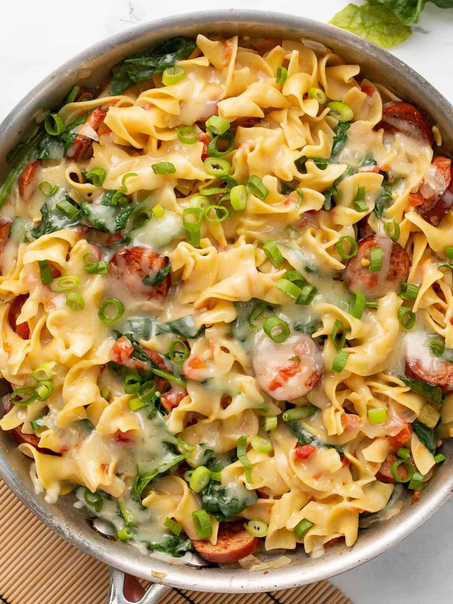

Cheesy Sausage Pasta

Description
This Cheesy Sausage Pasta is the dish that made me fall in love with one-pot pastas all those years ago. It’s fast, easy, SUPER flavorful, and because everything cooks in one pot, there’s barely anything to clean up after dinner. WIN. The flavorful combination of smoky sausage, spicy diced tomatoes with green chiles, and creamy Monterey Jack is simple but irresistible, and it cooks in about 30 minutes. That’s a winner in my book!
Ingredients
- 1 Yellow Onion
- 7 oz. Smoked Sausage
- 1 Tbsp Cooking oil
- 1 10 oz. Can Diced Tomatoes With Green chiles
- 8 oz. Wide Egg Noodles
- 1.5 Cups Chicken Broth
- 3 Cups Fresh Spinach
- 1 Cup Shredded Monterey Jack
- 1 Green Onion, Sliced
Instructions
- Dice the onion and slice the sausage into rounds.
- Add the cooking oil and sausage to a large skillet and cook over medium heat until the sausage is well browned. If there is excess fat in the skillet, drain it off before moving to the next step.
- Add the onions to the skillet with the sausage and continue to sauté until the onions have softened. Allow the moisture from the onions to dissolve any browned bits off the bottom of the skillet.
- Add the diced tomatoes with green chiles (with juices), uncooked pasta, and chicken broth. Stir until everything is evenly combined. It's okay if the broth does not fully cover the pasta.
- Place a lid on the skillet and allow the broth to come up to a boil. When it reaches a boil, turn the heat down to medium-low and let the pasta simmer for about 10 minutes, or until tender. Stir the pasta occasionally, replacing the lid each time.
- Once the pasta is cooked and only a small amount of saucy liquid remains, it's time to add the spinach to the skillet. Gently stir the fresh spinach into the pasta, allowing the residual heat to wilt the spinach.
- Once the spinach has wilted, top the pasta with Monterey Jack cheese. Place the lid back on the skillet and let the pasta heat over low until the cheese is melted and creamy.
- Sprinkle the sliced green onions over top just before serving.